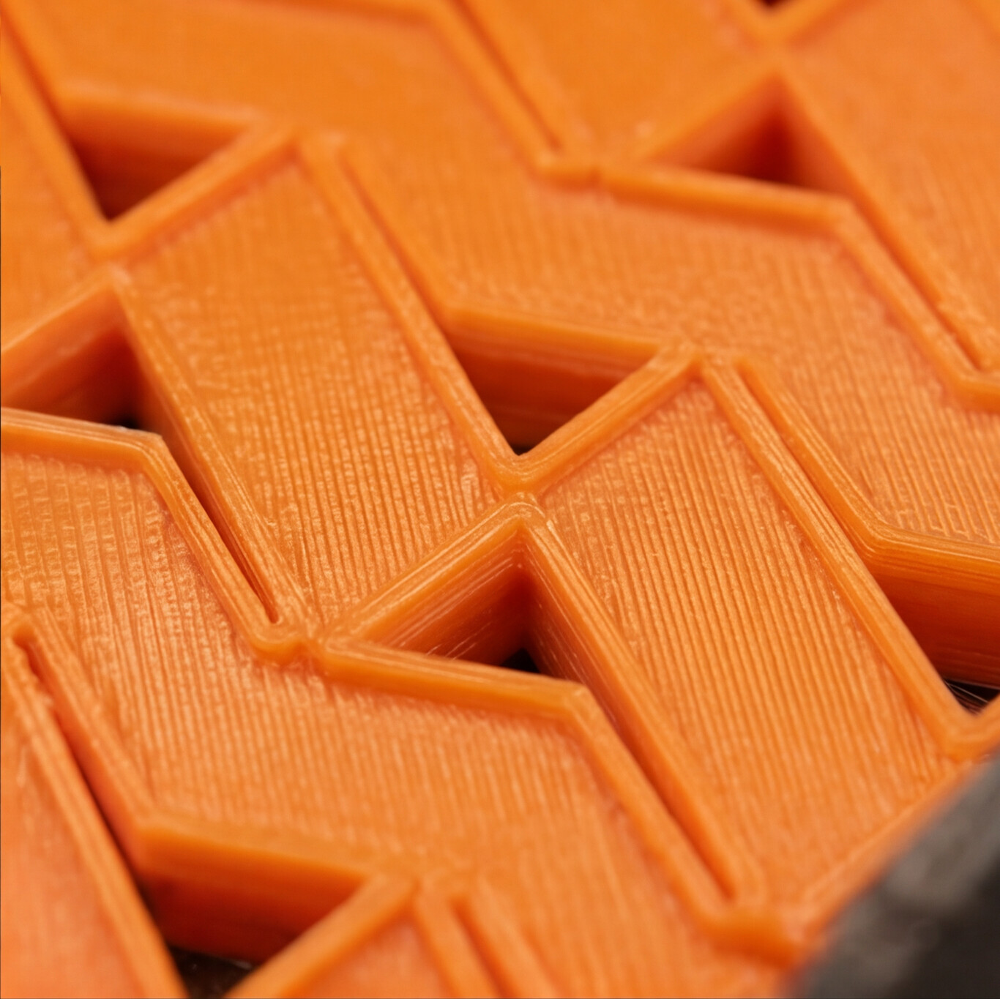

Productionการผลิต
- File setup is free.ฟรีค่าวางไฟล์
- Minimum print is 5 yards.ผ้าพิมพ์ขั้นต่ำ 5 หลา
- 7–10 days after the proof is signed and payment is in.ผลิต 7–10 วัน หลังพรูฟและชำระเงินเสร็จ

01 — Fabric print
Digital print on roll fabric. The file is placed free of charge. Color is tuned for you to confirm, up to three times, on a 30 × 30 cm patch. The color process is the Japanese one, and an approved file can be reprinted.
พิมพ์ผ้าดิจิทัลบนผ้าม้วน วางไฟล์ฟรี เกลาสีให้ยืนยันได้ 3 ครั้ง ชิ้นละ 30 × 30 ซม. สีเป็นเทคโนโลยีจากญี่ปุ่น ไฟล์ที่ยืนยันแล้วพิมพ์ซ้ำได้
After the third confirm, another color pass on the same artwork is 100 baht per piece.
หลังครั้งที่ 3 หากเปลี่ยนสีงานเดิม อีก 100 บาทต่อชิ้น
The rate falls as the order grows. Figures below are the print service, updated 16 February 2026.
ยิ่งสั่งมาก ราคาต่อหลายิ่งลง ตัวเลขด้านล่างคือค่าบริการพิมพ์ อัปเดต 16 กุมภาพันธ์ 2569
| Yardsจำนวนหลา | Baht / yardบาท / หลา |
|---|---|
| Under 50ต่ำกว่า 50 | 350 |
| 51–99 | 290 |
| 100–500 | 235 |
| 501–1,000 | 200 |
| 1,001–2,000 | 175 |
| 2,000 and up2,000 ขึ้นไป | 90 |
Dealer rates, through 31 December 2026. Not the same list as the yardage table above.
ราคาตัวแทนจำหน่าย ถึง 31 ธันวาคม 2569 คนละชุดกับตารางต่อหลาด้านบน
| Clothสินค้า | Priceราคา | Unitหน่วย | Widthหน้ากว้าง | Noteหมายเหตุ |
|---|---|---|---|---|
| Printed sheerผ้าโปร่งพิมพ์ | 890 | yardหลา | 145 cm | — |
| Printed dimoutผ้าดิมเอาต์พิมพ์ | 850 | yardหลา | 145 cm | Cloth includedราคารวมผ้า |
| Printed roller blindผ้าม่านม้วนพิมพ์ | 650 | ตรล. | 250–300 cm | Cloth not includedราคาไม่รวมผ้า |
| Printed wallpaper WPP01–05วอลล์เปเปอร์พิมพ์ WPP01–05 | 650 | m²ตร.ม. | 320 cm | UV printพิมพ์ระบบ UV |
02 — Japanese curtain
Printed Japanese curtains. The price follows the size of the cloth, not a stock roll. The size list is still open.
พิมพ์ม่านญี่ปุ่น คิดตามขนาดผ้า ไม่ใช่ตามม้วนสต็อก ตารางขนาดยังรอใส่
Send the width, the drop, and the cloth. The figure comes back with the size.
ส่งหน้ากว้าง ความสูง และชนิดผ้า ราคาจะกลับมาตามขนาดนั้น

03 — 3D printing
Two machines. FDM lays a melted filament in courses, so a screen can be large and the layer stays visible. SLA cures liquid resin with light, so a sample or a small relief can hold a fine edge.
สองระบบ FDM วางเส้นพลาสติกที่หลอมแล้วทีละชั้น ฉากกั้นทำได้ใหญ่และเห็นชั้นวัสดุ SLA ฉายแสงให้เรซิ่นเหลวแข็งตัว ตัวอย่างหรือผนังนูนชิ้นเล็กเก็บขอบละเอียดได้
Send the opening, the face the piece turns toward, and whether the edge has to read up close.
ส่งขนาดช่องเปิด ด้านที่ชิ้นงานหันเข้าหา และบอกว่าขอบต้องอ่านได้ในระยะใกล้หรือไม่
| FDM | SLA | |
|---|---|---|
| Howวิธี | A nozzle lays melted filament.หัวฉีดวางเส้นที่หลอมแล้ว | Light cures liquid resin, one layer at a time.แสงทำให้เรซิ่นเหลวแข็งทีละชั้น |
| Advantageข้อดี | Larger parts, lower cost, a surface you can lean on. The course of material stays visible.ชิ้นใหญ่ได้ ต้นทุนต่ำกว่า รับแรงจับต้องได้ และเห็นชั้นวัสดุ | Fine edges, small type, a smooth face. A relief reads from close up.ขอบละเอียด ตัวอักษรเล็ก ผิวเรียบ ผนังนูนอ่านได้ในระยะใกล้ |
| Limitข้อเสีย | Layer lines show. Tiny holes and hairline type do not hold. Supports mark the back.เห็นเส้นชั้น รูเล็กและตัวอักษรบางไม่อยู่ รอยซัพพอร์ตอยู่ด้านหลัง | Smaller build. Resin is brittle until it is washed and cured. Higher material cost.พิมพ์ได้เล็กกว่า เรซิ่นเปราะจนกว่าจะล้างและฉายแสงต่อ วัสดุแพงกว่า |
| Useใช้กับ | Screens, desk objects, a sample you hand around.ฉากกั้น ของตั้งโต๊ะ ตัวอย่างที่ส่งต่อให้จับ | A small relief, a face, a detail that has to be exact.ผนังนูนชิ้นเล็ก ใบหน้า รายละเอียดที่ต้องตรง |
Send the file, the yards, and the cloth.
ส่งไฟล์ จำนวนหลา และชนิดผ้า
Send the width, the drop, and the cloth.
ส่งหน้ากว้าง ความสูง และชนิดผ้า
Say FDM or SLA, and the size of the piece.
ระบุ FDM หรือ SLA และขนาดชิ้นงาน
01
Roll cloth, by the yard.
ผ้าม้วน คิดต่อหลา
02
Priced by the cloth size.
คิดตามขนาดผ้า
03
FDM filament, or SLA resin.
เส้น FDM หรือเรซิ่น SLA